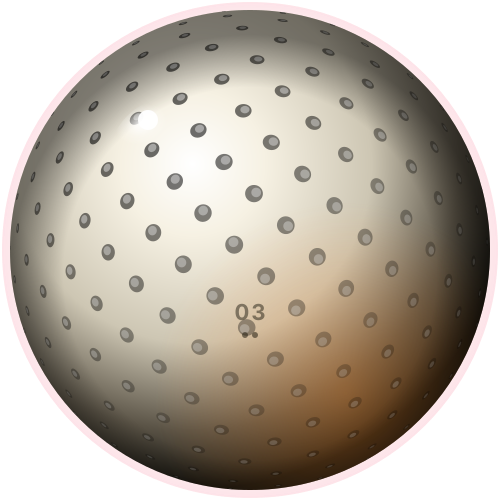
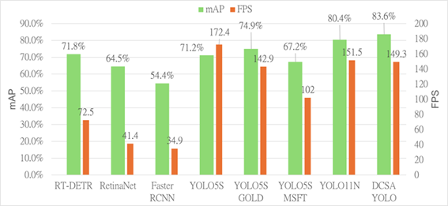
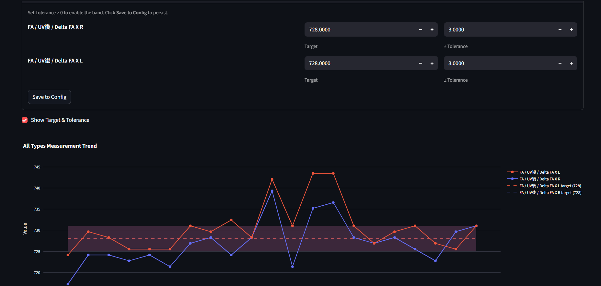

Software
is passion,
system design
is art.
Kai-Ju Yang — Senior Software Engineer with 9+ years building production-grade systems. From C# / C++ / Python platform engineering to React + FastAPI full-stack and PyTorch · LLM · RAG pipelines. Every system treated like an industrial product — modular, testable, designed to age well. Headed toward AI systems engineering. Hsinchu, Taiwan.

EFEM Automation Framework
C# core for 6 EFEM CIM systems shipped to major fabs. Stable annual sales, 99.9%+ uptime.
SECS/GEM Validation Tool
EAP host emulator for software-only protocol testing. Cuts on-site debug time 33%.
DCSA-YOLO defect detection
Custom YOLOv11 with AFF + DCS + AIE modules. mAP@50 0.836, +4% over baseline.
Divine Whisper
Full-stack RAG app. React + FastAPI, vector retrieval + paid LLM interpretation.
Architecture
is the craft.
Modular cores, testable boundaries, clear ownership. Same engineering rigor whether the consumer is a fab tool, a web user, or an LLM agent.
Systems that ship
and stay shipped.
EFEM Automation Framework
C# software core for a new EFEM (Equipment Front End Module) product line. Integrated complex hardware logic with upper-level CIM/EAP host systems. Shipped 6 systems to major semiconductor fabs at 40–60 units/year, generating ~$1.2M–$1.8M annual revenue. Stable for 4+ years.
SECS Simulator
Configurable EAP host emulator for SECS/GEM communication scenarios. Lets QA/FAE reproduce field issues in a software-only environment, drastically shortening debug cycles.
DCSA-YOLO — defect detection
Custom YOLOv11 architecture integrating AFF, DCS, and AIE modules for steel surface defect detection. mAP@50 reached 0.836, a +4% improvement over the YOLOv11 baseline. Published as NYCU master's thesis with full ablation study.

PLCSimulation_Service
Script-driven PLC hardware emulator. JSON scripts define behaviors without recompiling. CI/CD-ready.
Material Manager
Inventory & order management web app with role-based access, auto consumption, and a clean RESTful API.
Divine Whisper
AI fortune-draw SaaS. RAG retrieval + paid LLM interpretation pipeline. React + FastAPI, live deployment.
SN Version — Process visualization dashboard
Streamlit-based SPC dashboard for silicon-photonics fiber-array bonding production. Real-time line monitoring, parameter trending, anomaly surfacing. Self-initiated to give engineers visibility without standing at the equipment.

Tools of
the obsession.
Recent Build
Built backends.
Built systems.
Software R&D Assistant Manager
Leading the software team for high-precision fiber-array bonding equipment in silicon photonics. Designed a 4-view CCD vision algorithm and multi-axis motor control achieving 2µm alignment. Architected equipment communication and SECS/GEM compliance for CIM/EAP host integration. Initiated in-house SPC dashboard and process visualization.
Software R&D Assistant Manager
Architected the software core for a new EFEM product line — stable annual sales of 40–60 units, ~$1.2M–$1.8M revenue. Built a proprietary simulation/emulator stack to validate hardware + comm protocols, cutting on-site debug time 33%. Refactored legacy systems into high-perf C++ modules, lifting project margin 4%. Managed 4 engineers; coordinated with hardware vendors for 100% spec compliance.
Process Engineer
Cut process cycle time 11% while improving profile health 9% through recipe optimization. Built VB/Script automation for raw data consolidation, lifting engineering analysis efficiency 60%. Foundation for later structural-analysis thinking in software systems.
M.S. Precision & Automation · NYCU
NYCU master's thesis: Advanced Defect Detection using Deep Learning Architectures (DCSA-YOLO, mAP@50 0.836, +4% over baseline). Coursework: DSP, FIR/IIR filters in MATLAB, microprocessor system design, control system design.
Let's build
something precise.
Open to senior / staff roles in backend, platform, or AI systems engineering, and to collaboration on real products. Currently exploring real-time speech agents, hospitality AI assistants, and LLM evaluation harnesses. Hsinchu · remote · Taiwan-friendly.